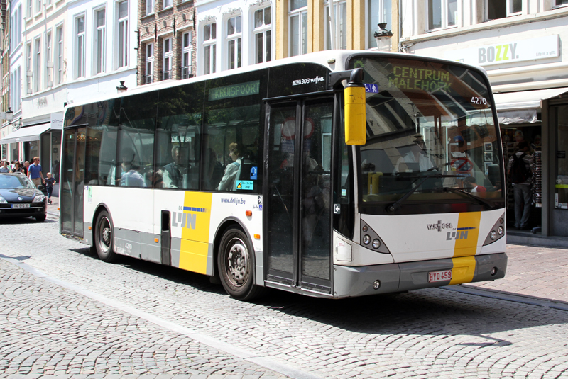
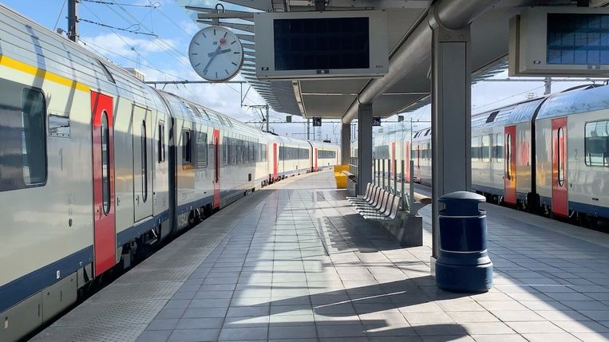
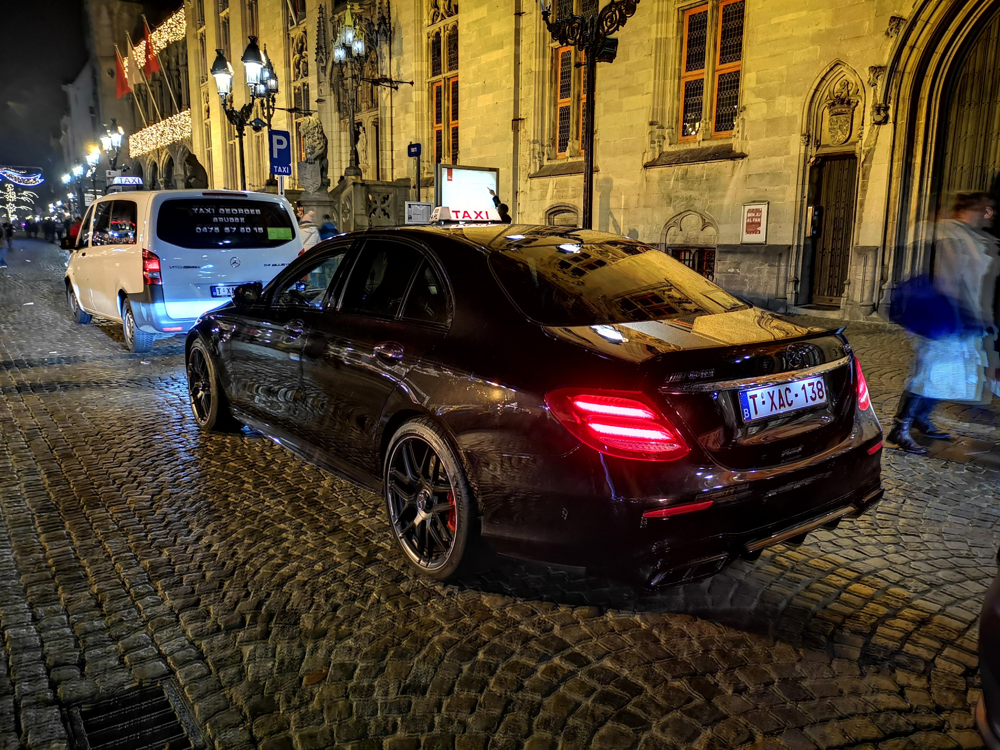
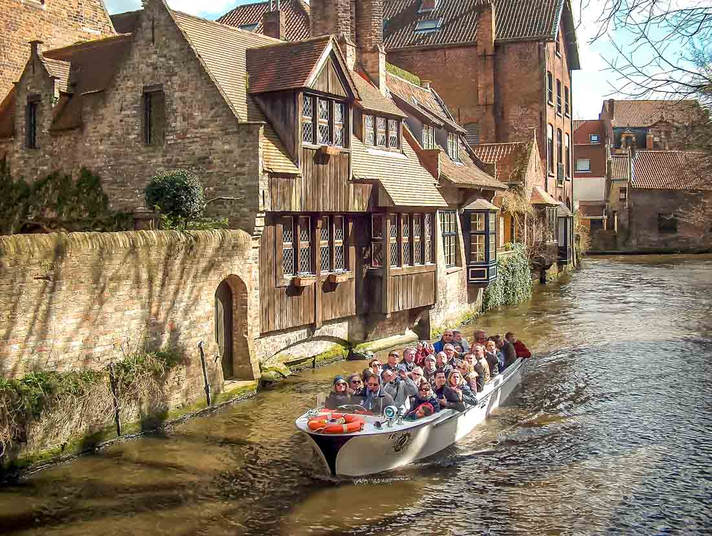
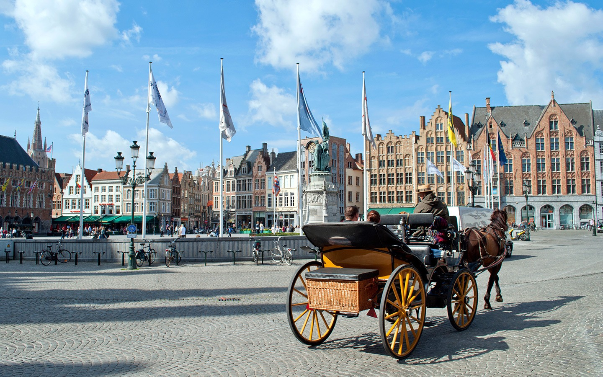

Transport
Like most European cities, Bruges is extremely easy to travel around.
There is an abundance of public transport including busses, trains, taxis and even boats and horse drawn carts!
Most of the city centre can be seen while walking which is a great way to take it all in but if that isn't for you
or you just fancy taking the weight off your feet, then there are plenty of ways of getting about.
The public transport runs all year round and runs from early morning right up until midnight with taxis operating 24hrs
so you can always get to where you need to be.
Listed below are the most common means of transport around the city and surrounding areas, with some information and additional
links to provide you with everything you need to get about.
Buses

The easiest, cheapest and most abundant form of transport around Bruges are the buses. While there
are a limited number of stops, there are plenty surrounding the major sites so it makes it ideal for taking in the sites.
Buses also run every five minutes from the station to city centre and a single ticket for €3.00 allows you to change buses as many times
as you like within 60 minutes.
Regional buses also run to take you out of the city and into the countryside meaning you can visit further afield with no worries.
The buses are clean and their frequency make them ideal for getting around.
For further information, click on the link in the menu.
Image © Chris/Wiseworld Photos
Trains

Brugge Station is the main station within Bruges and it connects to most of the other main city stations
such as Ghent, Brussels and Antwerp.
City Rail trains will take you round the city and to the docks and Intercity trains will take you out to the other cities. There is
also a special Express service that takes you between the city and Brussels airport which runs 18 times a day and takes around 1 hr and 28mins.
The trains are fast and convienient, however they are frequently delayed so allow extra time for your journey.
NMBS/SNCB are the main train companies that run and more information can be found by clicking the link in the menu.
Image © JVM 2019
Taxis

As with most cities, taxis are the most convienent means of travel but beware, they can be quite expensive. There is a lower
rate during the day but rates go up after 10pm as thats when the buses stop running and the trains finish an hour after that at 11pm. The plus is that they
can get you to pretty much anywhere you need to go and will always be running to get you home if those nights go on a little longer than expected!
There are 7 official taxi rank stations within the city centre, 3 at the docks and 2 just outisde the main center. There are also a total of 42 authorised
taxi companies so choice won't be an issue.
There is also the GreenRides bike taxi company that operates Tuesday to Sunday between 9:00am and 19:00pm that can take you anywhere within the city and surrounding
neighbourhoods which is a cheaper, alternative form of taxi. More information for them, including booking, can be found here.
To find and book a taxi, click on the link in the menu. A list of authorised taxis can also be found here
Image © u/thebestdj/Reddit
Riverboat

Ok, while it may not be a traditional form of public transport, river boats are an excellent way to get around the city
and see parts you wouldn't see normally.
There are 5 pick up and drop off points situated in the city centre and they all follow the same route allowing you a more scenic way of getting around.
The whole journey takes around 30 minutes and at at cost of €10.00 for adults, its a reasonably priced form of transport.
There are a few different companies operating tours and the boats run daily from 9.00am until 18.00pm but only run between March and November so take take that into account if you are planning a trip in the
winter months.
As the river boats are a tour, you will be accompanied by a tour guide who will give you commentary on the sites you pass so if you prefer a quieter journey
then you may wish to take the buses instead.
For further information including bookings with the main operator Boottochten, click on the link in the menu.
Image © 2016 4P Media Group BVBA
Horse Carriage

One of the more popular means of transport in the city are the horse and carriages in the city centre.
Much like the river boats, the horse and carriages are tours rather than a traditional form of public transport and so they only tour the main city centre.
The pickup and drop off point is in the main Market Square and journeys last around 30-40 minutes, however, about halfway through there will be a rest stop
allowing you to get off and stretch your legs.
The tours run every day from aroun 9:00am right up until 22:00pm allowing you to see the sights at night. However prices for the tour are around €55.00, so while they
are a popular and beautiful way to get around, they aren't the cheapest.
Further information, and to book a tour can be found on the link in the menu.